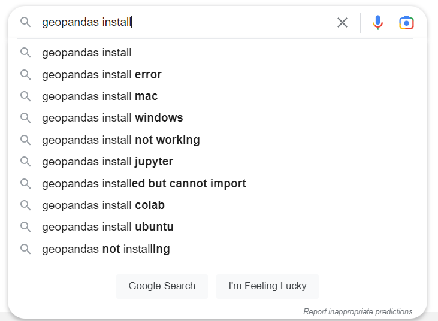

The Short
conda install -c conda-forge geopandas
content_copy
Copied!
Introduction
The inspiration for this article is twofold: my love of powerful GIS libraries and my hatred of frustrating installs. Geopandas intersects both.
If you found this article, that means you most likely encountered issues installing the geopandas python library. If not, no worries! If you do not understand the above snippet in green, have no fear. The method described below is the smoothest entry (in my experience) to begin coding with one of the popular geospatial python libraries to date. I've written this article out of personal experience and struggle, so if this is helpful in anyway, thank you!
History
While I won't dive into the entire backstory of Open-source GIS, (though that may be an intriguing article for another time...) I want to provide some context into why we must take this seemingly roundabout approach to simply install a python library.
Geopandas can arguably be described as the culmination of technology from the past two decades of advancement in GIS, python, and software development (1963 if you would like to get technical[3]). I'll support this argument due to the fact that geopandas stands on the shoulders of giants; this python library is built on top of established and powerful geospatial code. Although this methodology is practical in order to avoid re-inventing the wheel, this is not without adverse symptoms.
The Problem
From the screenshot above, four out of the nine google search suggestions allude to the core of the issue: simply installing! "But", you say, "I normally use pip, what's so hard about downloading a python library?" Enter dependencies. You know how geopandas stands on the shoulders of giants? Well in this case, you gotta install those giants too.
A list of dependencies for geopandas according its official website[2]
If you were like me and chomping at the bit to just get started with geopandas and tried to install via pip (like the majority of python packages), I'm guessing you may have ran into issues.
The biggest hurdle for installation include those odd little interfaces. The initial python packages (shapely, fiona, pyproj) are ports of C/C++ libraries. Fun fact - some of those C/C++ libraries are ports of Java libraries! The tricky part is that geopandas requires a combination of the C/C++ libraries and their correct version. If you have ever tried downloading and managing C/C++ libraries, the experience can be less than desirable.
In fact, I'm sure at this point you may have been annoyed, even frustrated. "I just want to make a damn map!", you proclaim. "What is this C binary package and why must I download this?"
So, what do we do from here? Accept our fate, attempt to download the right dependencies from the godforsaken depths of the unofficial Windows binaries for Python archive, and wallow in the endless pit of unhelpful yet snarky stackoverflow responses? There must be a better way, right?
A Better Way (?)
The python community, specifically the scientific computing community notoriously struggled issues with package installation, dependicy errors, and library management.[4] So much so that they created their own package distribution: Anaconda.
Anaconda, self-described as "The world's most popular open-source Python distribution platform" is a step closer into accessing geopandas.
"A step?", you say, "This sounds like a solution. No, the solution!". "We just need to get this separate distribution platform, and I'll be wrangling geospatial data in no time!" you declare full of relief and joy. Not so fast... there's more to this story and everything's not pretty.
Creeps and Bloats and Anacondas, oh my!
At this point, you can technically finish the article. You have all the resources you need toConda install. But, if you have read this far, you're probably like me and are particular and opinionated on technology your passionate about. Then you may be surprised to learn that Anaconda (or Conda for short) requires a "Minimum 3 of GB of disk space to download and install" SOURCE, not including the packages you actually need!
"Three gigabytes? Big deal", you mutter. That may be true, but let me explain. The default Conda comes pre-installed with many scientific python packages and the package manager, ready for you to jump right in at the get-go. Personally I like to have control over what I download. While I understand this way fits the needs of some users, I dislike downloading anything I don't need. Or, you're also like me and have an old computer and want to carefully manage storage space on your device. However, if you are still trying to download geopandas or other packages, the file footprint can quickly expand as you install large packages including their dependecies.
What I'm asserting is that Conda suffers from something called feature creep. According its wiki, feature creep is defined as the addition of unncessary features in a product. In software, this results in component bloat, irrelavent utilities, and over-complication of the original product.
I argue Conda suffers this due to the fact that they have an alternative python package manager: Miniconda. Miniconda is a "bootstrapped" version of Conda standing at only 400 megabytes. Without the 'unncessary' packages, you can jumpstart in a lean and mean package manager.